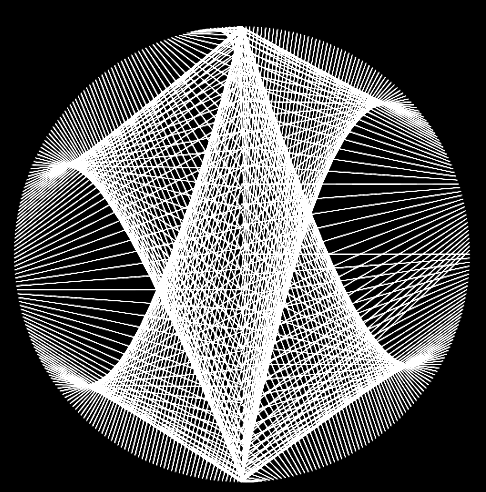
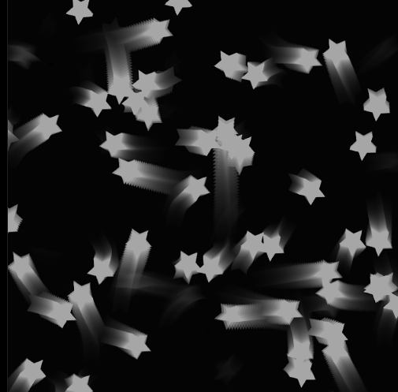
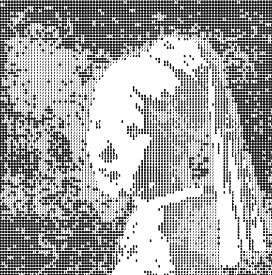
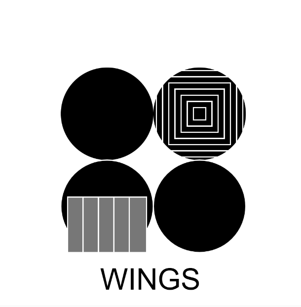
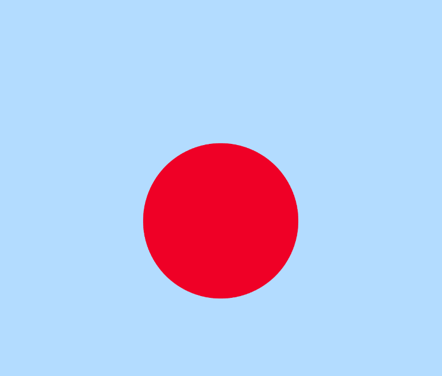
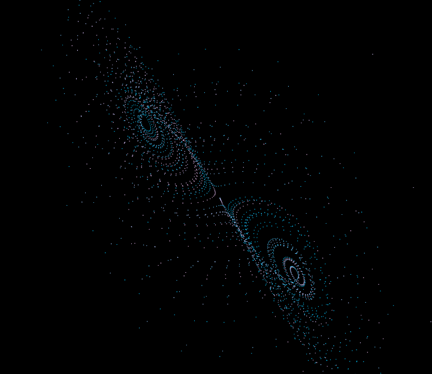
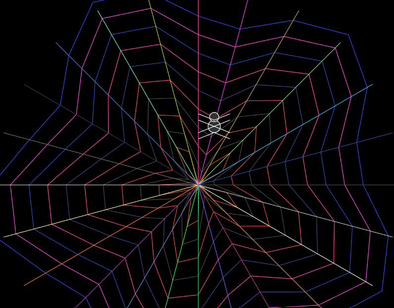
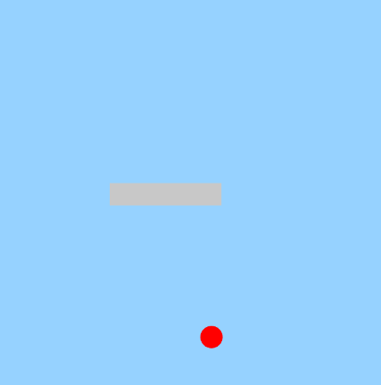
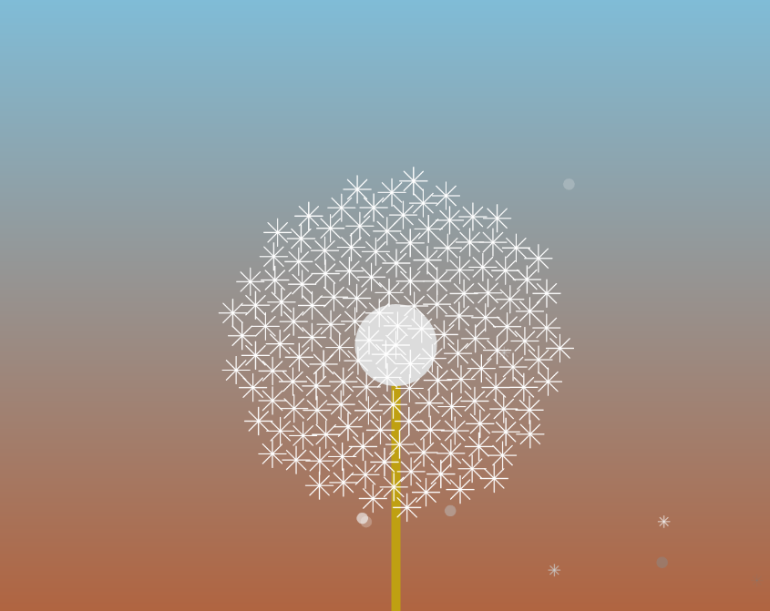

ARATZA CONCHA
La asignatura aborda el código como material de diseño y una forma de escritura visual. Por ello, el proceso no comienza directamente en la programación, sino en la conceptualización y formulación de lógicas algorítmicas. Estas definiciones iniciales se traducen posteriormente en el desarrollo de prototipos digitales que son refinados mediante un proceso iterativo de experimentación y depuración.
La inteligencia artificial se incorpora como una herramienta de apoyo para traducir ideas a código, explorar alternativas, comprender estructuras, detectar errores y reorganizar soluciones. Su uso no reemplaza la conceptualización ni las decisiones formales del estudiante. Por el contrario, exige aprender a formular problemas con precisión, evaluar críticamente los resultados generados y apropiarse del código mediante su lectura, explicación y modificación.
A lo largo del semestre desarrollé proyectos que integran programación creativa, diseño digital y exploración visual mediante herramientas como p5.js, HTML y CSS, construyendo experiencias interactivas publicadas en un entorno web.








